discografía

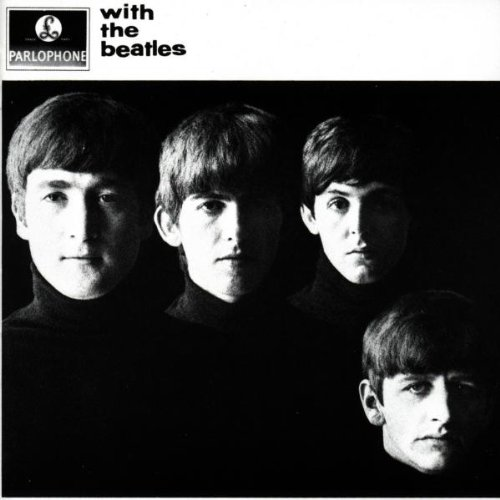
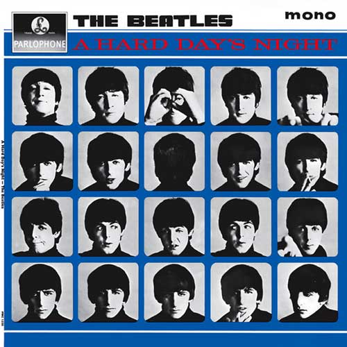
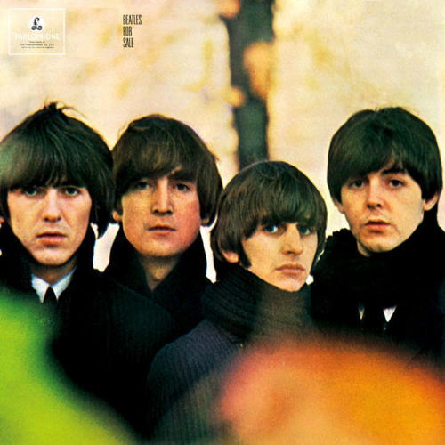
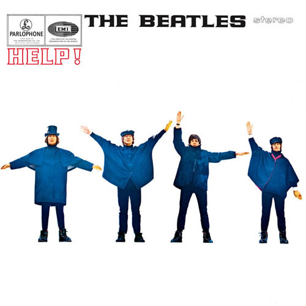
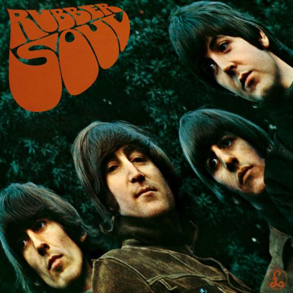
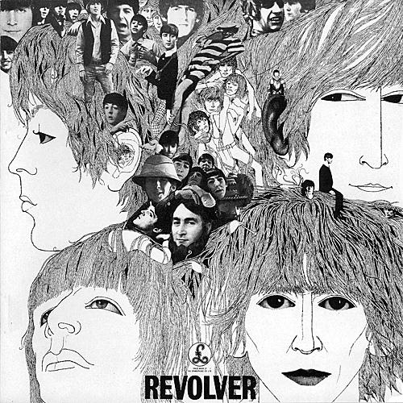
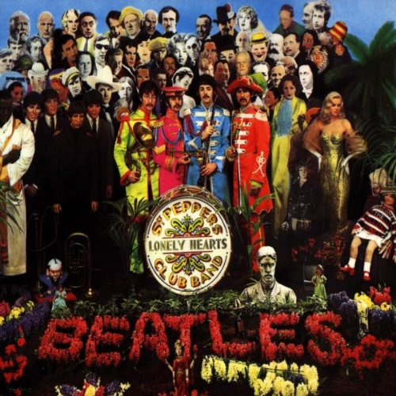
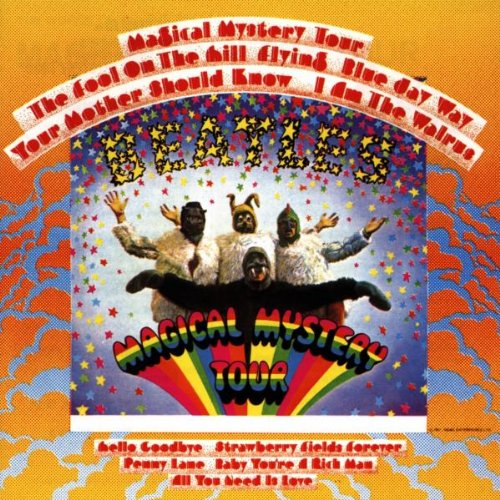
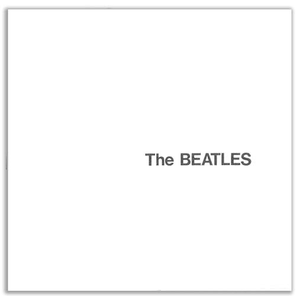
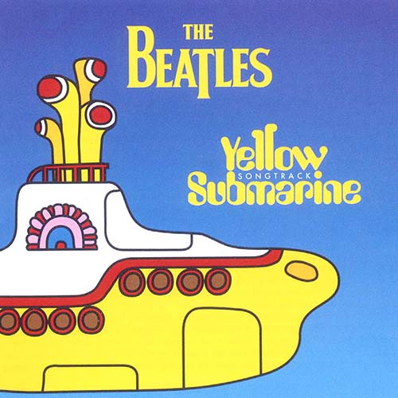
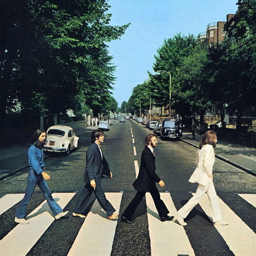
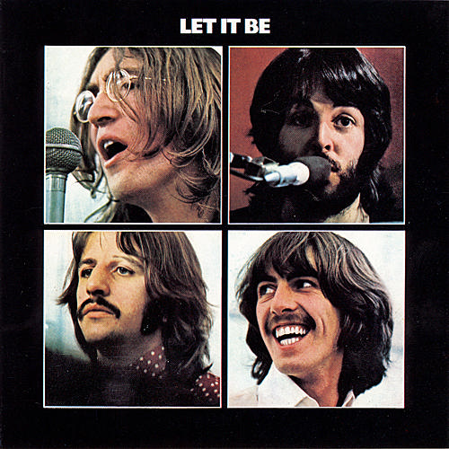
The beatles fue una banda britanica que existio en los años transcurridos entre 19670-1970. Fueron "bautizados" con ese nombre por John Lennon al combinar Beetles como el insecto con una letra que le diera un sonido extraño, asi sutituyo la segunda e por una "a" y creo el nombre de "The Beatles". En 1961 Brian Epstein un Vendedor de Discos escucho hablar a los jovenes de esta banda y decidio proponerles grabar un disco para que el lo pudiese veneder asi accidentalmente se convirtio en su manager que los administraria hasta su muerte en 1965.
Tras 4 discos y giras respectivas de cada uno The beatles decidieron dejar las giras y darse un descanso en 1966; esto propicio a rumores de su separacion, lo que en verdad sucedia era que creaban su proximo disco llamado the Sgt. Peppers Lonely Hearts Club Band que salio a la venta en el verano de 1967. Tras todo ese exito, y la ausencia de su manager original Brian Epstein The beatles tuvo un declive en su produccion y administracion lo cual en medio de riñas y discuciones llevo a su separacion oficial el 30 de abril de 1970. Apesar de la separacion el exito de the beatles sigue en pie con su musica como grupo y como la musica que crearon cada uno de los integrantes como solistas
Su nombre completo es John Winston Lennon, nació en 1940 en Liverpool y murió en 1980 en Nueva York. Fue el cantante y líder de los Beatles. Cuando contaba 16 años y estudiaba artes, conoció a Paul McCartney, formando ambos el dúo “The Nurk Twins”, del que unos años después surgirían los Beatles. Es autor junto a McCartney, de la casi totalidad de las composiciones que interpretaron los Beatles, entre las cuales lograron gran popularidad títulos como “Strawberry Fields Forever”, “All You Need Is Love”, “Yesterday”, etc. En 1968 se casó con la artista japonesa Yoko Ono, y tras la disolución de los Beatles en 1971, formó Plastic Ono Band y luego siguió trabajando en álbumes como “Imagine”, “Sometime In New York City”, “Mind Games”, “Walls And Bridges” y “Double Fantasy”. Murió asesinado en la puerta de su casa el 9 de diciembre de 1980 a manos de un desequilibrado.
James Paul McCartney, cantante y músico británico nacido en Liverpool en 1942. Era hijo de un director de orquesta, y aprendió desde muy joven a tocar la guitarra. De su encuentro con John Lennon surgió la base del conjunto que en 1960 adoptaría el nombre de The Beatles. McCartney aportó al grupo los temas melódicos que él mismo interpretaba como solista. Cuando éste se disolvió, McCartney inició una vertiginosa carrera en solitario con la publicación de los álbumes “McCartney” (1970) y “Ram” (1971), en los que se aprecia cierto alejamiento del rock. En esta época formó el grupo Wings, en compañía de su segunda esposa, Linda Eastman, y del exguitarrista de los Moondy Blues, Denny Laine, grabando los famosos álbumes “Band On The Run” (1974), “Wings Over America” (1976) y “London Town” (1978). En la década de los 80, tras la disolución de Wings, McCarteny volvió a grabar con su nombre, estrenándose con el disco “McCartney II” (1980). Siguieron otros álbumes efectistas, como “Pipes Of Peace” (1983) y “Flowers In The Dirt” (1989), con la colaboración de Roger Walters y Elvis Costello. McCartney también ha compartido grabaciones con Stevie Wonder, “Ebony And Ivory”, y con Michael Jackson, “The Girl Is Mine”. En 1991 estrenó su primera obra sinfónica, “Liverpool Oratorio”, escrito en colaboración con Carl Davis.
Cantante y compositor británico miembro de los Beatles, nacido en Liverpool en 1943. Acudió a la escuela infantil Dovedale Road, cerca de Penny Lane, al mismo tiempo que John Lennon. A los once años ingreso en el Liverpool Institute for Boys, edificio hoy en día convertido en el Liverpool Institute for Performing Arts, en el cual conoció a Paul McCartney. Más tarde, Paul McCartney escuchó a Harrison tocar el riff de "Raunchy" en el autobús de camino a casa y Paul le propuso unirse al grupo. Harrison es presentado por Paul McCartney a John Lennon e ingresa en The Quarry Men, que posteriormente, tras cambiar varias veces de nombre, acabará denominándose The Beatles. Atraído por la música y la filosofía india hizo frecuentes viajes a Asia, lo que se deja sentir notablemente en sus composiciones musicales que influyeron no sólo en los Beatles, sino también en un gran número de conjuntos. Tras la desolución del grupo, en 1970 debutó en solitario con el triple álbum “All Things Must Pass”, y en 1971 organizó en Nueva York un concierto benéfico por Bangladesh con la colaboración de Bob Dylan, Eric Clapton, Leon Russel y otros músicos. En 1976 fundó su propio sello discográfico, “Dark Horse”, donde editó obra como “33 y 1/3” (1976), “Somewhere In England” (1981) y “Best Of Dark Horse” (1989). En el campo cinematográfico produjo la serie de películas protagonizadas por Monty Python (“La vida de Brian”, etc.) y los filmes de “Shangai Surprise” (1986), interpretado por la cantante Madonna y “Mona Lisa” (1986).
Richard Starkey, mejor conocido como, Ringo Starr, Nació el 7 de julio de 1940, en Liverpool, es un músico cantante y compositor ingles, es altamente reconocido por haber sido baterista de "Los Beatles", cuando era un niño, Ringo salió de la escuela debido a una grave peritonitis, permaneció en coma durante dos años y diez semanas en el hospital. Pese a todo y debido al auge del skiffle, la mayor afición de Ringo era la música. Su padrastro Harry Greaves le compró una batería de segunda mano. Tocó para algunas bandas locales aunque alcanzó cierta reputación en el grupo Rory Storm y The Hurricanes, donde cambió su nombre por el de Ringo Starr. En otoño de 1960 durante un concierto conoció a The Beatles. En varias ocasiones sustituyó a Pete Best a la batería debido a su ausencia, y entabló una fuerte amistad con el resto de la banda y con el paso del tiempo paso a ser miembro oficial de la banda. Siguió con su carrera en solitario, primero fue 'Sentimental Journey' (1970), después 'Ringo'(1973) —el más exitoso— y así hasta 14 discos de estudio. Ahora, con mpas de 70 años en la bateria, poco o nada queda de la frágil salud que arrastraba en su infancia. Richard Starkey sigue sobre el escenario, sigue tocando la batería, sigue siendo simplemente Ringo.